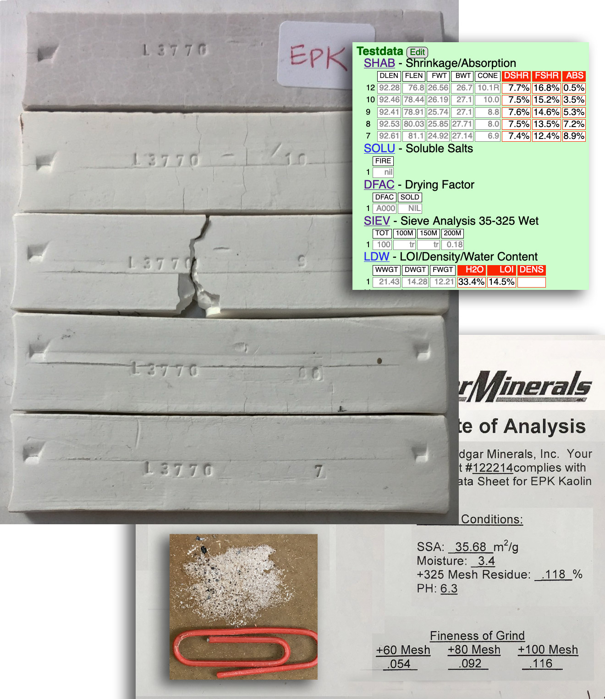
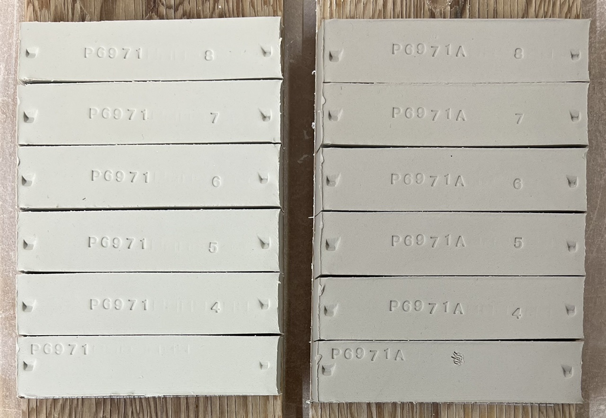
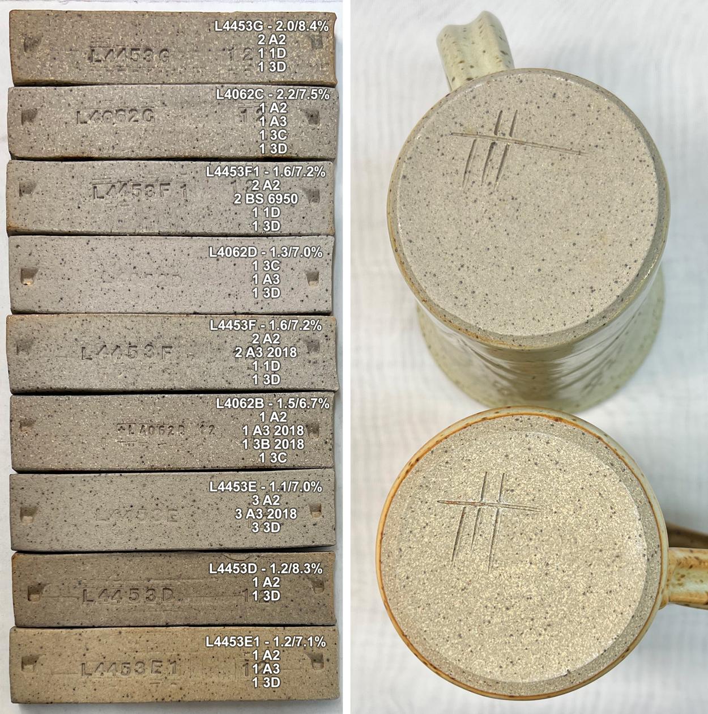

A Low Cost Tester of Glaze Melt Fluidity
A One-speed Lab or Studio Slurry Mixer
A Textbook Cone 6 Matte Glaze With Problems
Adjusting Glaze Expansion by Calculation to Solve Shivering
Alberta Slip, 20 Years of Substitution for Albany Slip
An Overview of Ceramic Stains
Are You in Control of Your Production Process?
Are Your Glazes Food Safe or are They Leachable?
Attack on Glass: Corrosion Attack Mechanisms
Ball Milling Glazes, Bodies, Engobes
Binders for Ceramic Bodies
Bringing Out the Big Guns in Craze Control: MgO (G1215U)
Can We Help You Fix a Specific Problem?
Ceramic Glazes Today
Ceramic Material Nomenclature
Ceramic Tile Clay Body Formulation
Changing Our View of Glazes
Chemistry vs. Matrix Blending to Create Glazes from Native Materials
Concentrate on One Good Glaze
Copper Red Glazes
Crazing and Bacteria: Is There a Hazard?
Crazing in Stoneware Glazes: Treating the Causes, Not the Symptoms
Creating a Non-Glaze Ceramic Slip or Engobe
Creating Your Own Budget Glaze
Crystal Glazes: Understanding the Process and Materials
Deflocculants: A Detailed Overview
Demonstrating Glaze Fit Issues to Students
Diagnosing a Casting Problem at a Sanitaryware Plant
Drying Ceramics Without Cracks
Duplicating Albany Slip
Duplicating AP Green Fireclay
Electric Hobby Kilns: What You Need to Know
Fighting the Glaze Dragon
Firing Clay Test Bars
Firing: What Happens to Ceramic Ware in a Firing Kiln
First You See It Then You Don't: Raku Glaze Stability
Fixing a glaze that does not stay in suspension
Formulating a body using clays native to your area
Formulating a Clear Glaze Compatible with Chrome-Tin Stains
Formulating a Porcelain
Formulating Ash and Native-Material Glazes
G1214M Cone 5-7 20x5 glossy transparent glaze
G1214W Cone 6 transparent glaze
G1214Z Cone 6 matte glaze
G1916M Cone 06-04 transparent glaze
Getting the Glaze Color You Want: Working With Stains
Glaze and Body Pigments and Stains in the Ceramic Tile Industry
Glaze Chemistry Basics - Formula, Analysis, Mole%, Unity
Glaze chemistry using a frit of approximate analysis
Glaze Recipes: Formulate and Make Your Own Instead
Glaze Types, Formulation and Application in the Tile Industry
Having Your Glaze Tested for Toxic Metal Release
High Gloss Glazes
Hire Us for a 3D Printing Project
How a Material Chemical Analysis is Done
How desktop INSIGHT Deals With Unity, LOI and Formula Weight
How to Find and Test Your Own Native Clays
I have always done it this way!
Inkjet Decoration of Ceramic Tiles
Is Your Fired Ware Safe?
Leaching Cone 6 Glaze Case Study
Limit Formulas and Target Formulas
Low Budget Testing of Ceramic Glazes
Make Your Own Ball Mill Stand
Making Glaze Testing Cones
Monoporosa or Single Fired Wall Tiles
Organic Matter in Clays: Detailed Overview
Outdoor Weather Resistant Ceramics
Painting Glazes Rather Than Dipping or Spraying
Particle Size Distribution of Ceramic Powders
Porcelain Tile, Vitrified Tile
Rationalizing Conflicting Opinions About Plasticity
Ravenscrag Slip is Born
Recylcing Scrap Clay
Reducing the Firing Temperature of a Glaze From Cone 10 to 6
Setting up a Clay Testing Program in Your Company or Studio
Simple Physical Testing of Clays
Single Fire Glazing
Soluble Salts in Minerals: Detailed Overview
Some Keys to Dealing With Firing Cracks
Stoneware Casting Body Recipes
Substituting Cornwall Stone
Super-Refined Terra Sigillata
The Chemistry, Physics and Manufacturing of Glaze Frits
The Effect of Glaze Fit on Fired Ware Strength
The Four Levels on Which to View Ceramic Glazes
The Majolica Earthenware Process
The Potter's Prayer
The Right Chemistry for a Cone 6 Magnesia Matte
The Trials of Being the Only Technical Person in the Club
The Whining Stops Here: A Realistic Look at Clay Bodies
Those Unlabelled Bags and Buckets
Tiles and Mosaics for Potters
Toxicity of Firebricks Used in Ovens
Trafficking in Glaze Recipes
Understanding Ceramic Materials
Understanding Ceramic Oxides
Understanding Glaze Slurry Properties
Understanding the Deflocculation Process in Slip Casting
Understanding the Terra Cotta Slip Casting Recipes In North America
Understanding Thermal Expansion in Ceramic Glazes
Unwanted Crystallization in a Cone 6 Glaze
Using Dextrin, Glycerine and CMC Gum together
Volcanic Ash
What Determines a Glaze's Firing Temperature?
What is a Mole, Checking Out the Mole
What is the Glaze Dragon?
Where do I start in understanding glazes?
Why Textbook Glazes Are So Difficult
Working with children
Simple Physical Testing of Clays
Description
Learn to test your clay bodies and clay materials and record the results in an organized way, understanding the purpose of each test and how to relate its results to changes that need to be made in process, recipe and materials.
Article
Many technicians have amindset that is too narrow when it comes to dealing with clay body formulation. Compared to glazes, clay bodies and engobes are much more of an adventure in the mineralogy and physical properties of the materials. When glazes melt everything usually goes into solution in the melt, but the vitrification process is different. The differences in mineralogy; particle size, shape, size distribution and surface characteristics; body preparation, and ware forming methods; and firing history are examples of things that influence the final fired product.

Lab testing a clay for its physical properties
It only takes a few minutes to make these. But you would be amazed at how much information they can give you about a clay! These are SHAB test bars, an LDW test for water content and a DFAC test disk about to be put into a drier. The SHAB bars shrink during drying and firing, the length is measured at each stage. The LDW sample is weighed wet, dry and fired. The tin can prevents the inner portion of the DFAC disk from drying and this sets up stresses that cause it to crack. The nature of the cracking pattern and its magnitude are recorded as a Drying Factor. The numbers from all of these measurements are recorded in my account at Insight-live. It can present a complete physical properties report that calculates things like drying shrinkage, firing shrinkage, water content and LOI (from the measured values).
Consider these three simple tests that we find most practical for clay bodies: The SHAB test, LDW test and DFAC test. While these are easy to do it is tricky to organize all the data they produce (e.g. we are running these on dozens of clays at any given time, all in various stages of completion). Feeding the data into our insight-live.com account is the key to progressively learning from it.
This subject of physics reveals an interesting comparison between potters and industrial technicians. On one hand, the potter judges a body by how it feels in his hands, how it bends, stretches, pulls, how it behaves on the wheel, how it trims, how it dries, how it reacts visually with his glazes and fires in his kiln. But that potter may not be able to provide any data about things like fired density, thermal expansion, drying shrinkage, % water content, etc. On the other hand, a factory technician may have never hand-formed a ceramic object or even kneaded a piece of clay but he/she might be able to quote dozens of statistics about (as generated by testing devices). We advocate a middle ground: Hands-on experience applying the knowledge accumulated from affordable practical testing methods. Many body properties are immediately evident in the hands of an experienced potter and not quickly shown by instruments. Likewise, data from a test can really provide direction to resolve a problem or adjust a property.
Strangely, many large manufacturers in the ceramic industry do not actually have a standard testing and quality control program in place. It is common to rely completely on suppliers and their tech support. Troubleshooting manuals they supply speak the language of production-line workers with simple "if this happens do that" style instructions. What about people and companies who want to understand the why questions, become more independent? As noted, while many potter's textbooks are highly insightful and helpful there is no substitute for setting up a test program to accumulate some data.
Testing Categories:
Universal Standards
An example is the 50-volume Annual Book of Worldwide ASTM Standards (American Society for Testing and Materials). One of the volumes deals with refractories, glaze, and ceramic materials. The books are well organized and describe all test procedures in great detail. Just reference a test by number and you convey all details about how you achieve your results. However, these are not for the faint-of-heart. And they are not for people without the lab equipment called for.
Industry Specific Standards
Individual industries like construction, ferrous metals and electrical porcelain have outlined standard testing guidelines more specific to their needs, for example, ANSI (American National Standards Institute). Companies publish data sheets and advertising material in a format that voluntarily recognizes these standards.
Customer Required
Customers sometimes require manufacturers to document product quality and compliance (e.g. ISO 9000 which requires documentation on how tests are done, tolerances, noncompliance procedures, procedure change mechanisms, test equipment calibration schedules, proof of certification, etc). Unfortunately, the emphasis of all of this is on the production of documentation, not understanding the physics of the materials.

Test bars from recent kiln firings
Here is how to enter the data into Insight-live
Multiple batches of fired test bars, organized by temperature, have already been weighed and measured (the weights and lengths are written on the sides of the bars). Each batch is accompanied by the cones from the firing in the test kiln (these influence how the temperature is recorded and adjustments to kiln firing schedules). Since I am working on many runs, tests and projects at any given time, these tests pile up rapidly. And they generate a lot of SHAB test data that needs to be input into the Insight-live.com account promptly.
Internal
Many tests are internal to a company, intended to solve problems, maintain properties critical to production efficiency and cost, control reject rates, etc. In this situation, one is free to formulate any method that seems best for the circumstances. Technicians generally have to be flexible and make do with what is available, so standard methods are usually adjusted. These simple tests are sometimes the most revealing and practical.
Getting Started with Internal Testing
We recommend starting with one of the tests built into Insight-Live. It predefines many and the ones of interest to us here are the SHAB test (Shrinkage, Absorption), DFAC test (Drying Factor), SOLU test (Solubles) and LDW test (LOI, Density, Water Content). The procedures for these describe how to make and process the three simple specimens I showed you at the beginning of this chapter (shrinkage bars, H2O bars, drying disk). These provide a framework within which to begin gathering data and relating that to production needs.
The end-product of all your clay body testing work is to generate 'real numbers' that mean something; that can be compared with others to reach conclusions. So my advice is simple. Set up a little lab for yourself and take control of the physical properties of your clay bodies and materials.
Related Information
EPK fired test bars, data, certificate and the data

This picture has its own page with more detail, click here to see it.
All of the test bars have been fired in this project to characterize a shipment of EPK (from cone 7-10 and 10R bottom to top). The dry and fired lengths and the dry and fired weights testdata were measured and entered into an Insight-live account. The results are shown in the red-titled columns (the drying shrinkage, firing shrinkage, absorption). The weights from the sieve analysis are also shown. The calculation of water content of the plastic material (a very high 33.4%) and LOI (14.5%). I also like to take and upload a photo of the oversize material from the sieve analyses (to compare with past shipments) and of their manufacturer's certificate of analysis.
Notice the data that the manufacturer considers important to include on the certificate that they send with the shipment: Particle size, particle surface area and moisture content. Of course, they would not be able to do all the tests I do. But the product is affected by the properties of the material, so I have to test.
A typical clay lab report:
Is this really what you need?

This picture has its own page with more detail, click here to see it.
If you are trying to use local clays for brick, tile or even pottery production, characterizing the available materials is the first step. But how? This is the kind of data a lab might return - perhaps you wonder about its value? We feel traditional ceramics technology is fundamentally a relative science. A history of many reports like these, in context with other data, might be good for mining companies to determine if new stockpiles have any shifts in certain specific properties. Or a tile company evaluating a new ball clay. But as a way to understand the utility of a clay for a specific ceramic purpose, this contextless report is of little use. For example, the physical properties, the whole reason for using a clay, are unrelated to the chemistry. This is also a tunnel vision view, looking at only one temperature. On the other hand, simple procedures, like the SHAB test, provide a hands-on way to understand what a clay actually is.
Kaolin changes raw color in second shipment

This picture has its own page with more detail, click here to see it.
These are SHAB test bars prepared from two different shipments of the same commercial kaolin (used in porcelain body production). The darker one is markedly more plastic also. This underscores the need to characterize the materials you use in production and maintain an ongoing testing program. This difference was actually easy to deal with: Reduction of the percentage of bentonite in the body.
Drying cracks in bricks - but no data to determine best response

This picture has its own page with more detail, click here to see it.
These bricks were being extruded in India and the plant was suffering drying cracks. A consultant recommended a high percentage addition of lignosulphonate, at a cost of $800/ton, as a solution. But before adding such a large expense, some obvious changes seemed in order first. The technician knew the plasticity index of the clay (a measurement used for soils) but he did not have records of its drying shrinkage, water permeability, drying strength or drying performance - when problems like this arise such data provides direction and help answer questions. For example, is cracking happening because of lack of drying strength or plasticity or because drying shrinkage is too high. The splitting along the corner of the extrusion is a clue that plasticity could be lacking - that could be solved by a small bentonite addition or reduction in grog. If permeability is low an increase in grog might be needed (if the pugmill can still extrude slugs with a smooth edge and corner). Notice the cracks that start from those splits (lower left). But also notice how the top edge has shrunk while the center section has not. That indicates the drying process is not tuned to subject all surfaces to equal airflow (sure enough, these are being dried outside in the sun and wind). Another factor is cross-section: The round holes create variations in thickness that exceed 300%, square holes with rounded corners would be better. Given the location, economic realities and past success this one change might be enough to make a big difference.
Fine tuning maturity of a buff stoneware: It is about the data

This picture has its own page with more detail, click here to see it.
I am reformulating the cone 10R stoneware (the top mug) to have the variegated surface of the lower one. The top one is more vitrified and thus has a more homogeneous grey color. While that makes it stronger, it carries the danger of bloating with the materials I use and particle size (and warping). I measure degree-of-vitrification using the SHAB test, which produces fired shrinkage and porosity data. The top mug has a porosity of 1.3% and the bottom one 2.5%. That higher porosity gives protection against bloating and the light/dark variegated aesthetic I also want. The nine test bars on the left each show their porosity/firing shrinkage and recipe (my materials have simple names like A2, A3, 3C, they include ball clays, silts, stonewares). I made these nine mixes trying to find a combination that yields the desired porosity but also does not have more than 7.5% drying shrinkage (to avoid drying cracks), is plastic enough for easy forming and does not have too sandy a texture. The second from the top is the best so far and has given clear direction for the next round of testing. These nine tests were fired at five temperatures, producing 45 specimens to track and 180 measurements to make to get the final data (just for this SHAB test, others were done also). An account at Insight-live.com makes it possible to track this plus 50 other projects on the go right now. And it makes it easier to make decisions based on data.
Links
| Tests |
Pyrometric Cone Equivalent
Make a pyrometric cone out of a clay or material to see what temperature it bends at |
| Tests |
Drying Shrinkage
Measure the amount a clay test bar shrinks as it dries |
| Tests |
Firing Shrinkage
Measure the amount a clay test bar shrinks as it is fired in a kiln |
| Tests |
Dry Strength (kgf/cm2)
Measure the tensile strength of a dried clay test bar |
| Tests |
LOI/Density/Water Content
LDW LOI, density and water content test procedure for plastic clay bodies and porcelains |
| Tests |
LOI (100-1000C)
Measure how much weight a dried clay test bar loses as it is fired in a kiln |
| Tests |
Sieve Analysis Dry
A measure of particle size distribution by vibrating a powdered sample through a series of successively finer sieves |
| Tests |
Shrinkage/Absorption Test
SHAB Shrinkage and absorption test procedure for plastic clay bodies and materials |
| Tests |
Sieve Analysis 35-325 Wet
A measure of particle size distribution by washing a powdered or slaked sample through a series of successively finer sieves |
| Tests |
Soluble Salts
Evaluate and compare the solubles salts content in clay bodies and materials |
| Tests |
Density (Specific Gravity)
Measure the density of a dried clay test bar |
| Tests |
Sieve Analysis Wet
A measure of particle size distribution by washing a powdered or slaked sample through a series of successively finer sieves |
| Tests |
Dry Strenth (Round Bars)
|
| Tests |
Dry Strength (Square Bars)
Measure the tensile strength of a square cross section test bar |
| Projects |
Tests
|
| Articles |
How to Find and Test Your Own Native Clays
Some of the key tests needed to really understand what a clay is and what it can be used for can be done with inexpensive equipment and simple procedures. These practical tests can give you a better picture than a data sheet full of numbers. |
| Articles |
Setting up a Clay Testing Program in Your Company or Studio
Set up a routine testing pipeline and start generating historical data that will enable your staff to understand your source materials and maintain, adjust and troubleshoot your clay body recipes. |
| Glossary |
Physical Testing
In ceramics, glazes, engobes and bodies have chemistries and physics. Your formulation and quality control most likely need to focus on the physical properties. |
 PayPal | No tracking, No ads, No paywall, No transient content! Just organized, concise information constantly updated and improved. Was this helpful? Consider supporting me. |
| By Tony Hansen Follow me on        |  |
Got a Question?
Buy me a coffee and we can talk 

https://digitalfire.com, All Rights Reserved
Privacy Policy